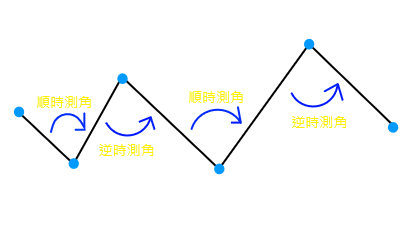

TraverseCal
關於我們
好站連結
測量小知識
導線計算知識
導線測量知識
導線計算
閉合導線計算
附合導線計算
附合
導線計算
>>>
Step 1 輸入資料
>>>
Step 2 進階選項設定(Optional)
>>>
Step 3 開始計算
更改導線點個數
[二度分帶坐標系統]
起始外部控制點座標值 X:
起始外部控制點座標值 Y:
起始內部導線點座標值 X:
起始內部導線點座標值 Y:
末端內部導線點座標值 X:
末端內部導線點座標值 Y:
末端外部控制點座標值 X:
末端外部控制點座標值 Y:
[觀測角: 以 度-分-秒 格式輸入]
使
用範例數據:
7點
5點
4點
5點
調
整觀測角測量方式:(預設:順時測角)

恢復預設值
順時測角
逆時測角
開始計算